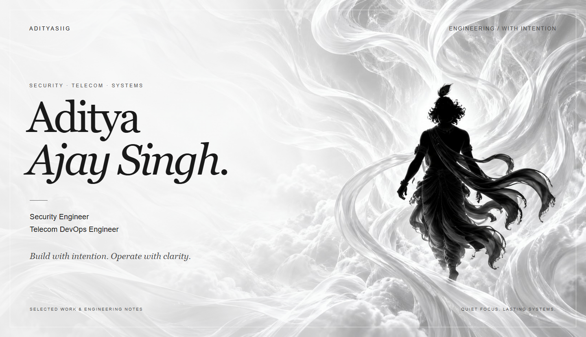
Portfolio ↗
/
LinkedIn ↗
/
Say hello ↗
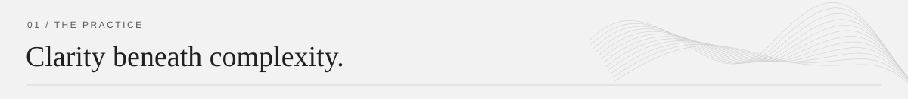
I’m Aditya Ajay Singh, a Security Engineer and Telecom DevOps Engineer. I build the systems behind the signal: infrastructure that carries calls, tools that make operations clearer, and software that helps people get work done.
At Crown IT Solution, I’ve grown from VoIP NOC Engineer to Telecom DevOps Engineer since joining in August 2025. My work spans an 82+ server production fleet, SIP routing, Linux automation, CDR analytics, and carrier operations. I stay involved after deployment: observing, troubleshooting, and improving what runs.
01 / Infrastructure — Keep the signal moving.
SIP routing, softswitch deployment, fleet operations, and repeatable automation for real telecom environments.
02 / Security — Understand the edges.
Web, API, network, and VoIP testing. Turn findings into reproducible evidence and practical improvements.
03 / Software — Make complexity usable.
Backend services, data pipelines, and considered interfaces that bring operational work into focus.
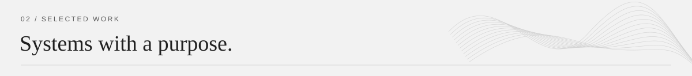
A selection of the platforms, deployment tools, and experiments I work on.
|
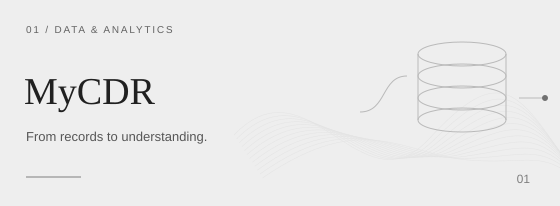
MyCDR / CDR Direct
CDR ingestion and analytics for NPANXX traffic, trunks, call quality, revenue, cost, and margin. Built for protected data nodes and production dashboards.
PYTHON · FLASK · DUCKDB · DOCKER
Explore the project ↗
|
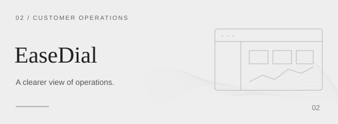
EaseDial Customer Portal
A carrier portal that brings tenant-scoped access, KPIs, CDR diagnostics, rates, invoices, exports, and transaction history into one operational interface.
TYPESCRIPT · NEXT.JS · REST APIs
Source ↗ / Visit portal ↗
|
|
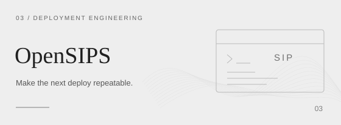
OpenSIPS Deploy
Docker-packaged tooling for repeatable OpenSIPS installation, upgrades, and standalone deployments through a controlled, bundle-driven workflow.
OPENSIPS · PHP · BASH · DOCKER
Deployment engineering / Telecom infrastructure
|
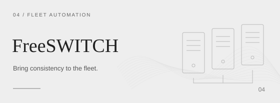
FreeSWITCH Deploy System
Repeatable server provisioning and configuration workflows that reduce manual setup and configuration drift across telecom environments.
FREESWITCH · LINUX · BASH · AUTOMATION
Deployment engineering / Fleet operations
|
|
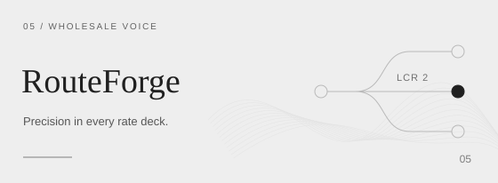
RouteForge LCR2
Rate-deck tooling for NPANXX pricing and second-lowest-cost routing workflows, shaped by the day-to-day needs of wholesale voice operations.
TYPESCRIPT · NPANXX · LEAST-COST ROUTING
Explore the project ↗
|
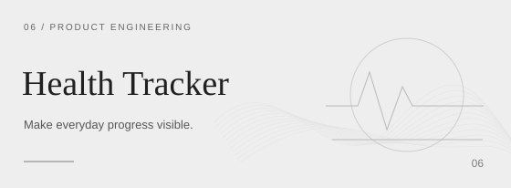
Health Tracker
A full-stack platform for nutrition, hydration, weight, body metrics, food discovery, analytics, and AI-assisted coaching.
NEXT.JS · TYPESCRIPT · SUPABASE · AI
Source ↗ / Try it live ↗
|
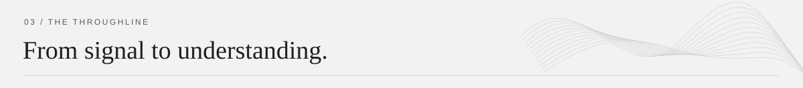
The work connects: route the traffic, operate the infrastructure, understand the records, and put useful information in people’s hands.
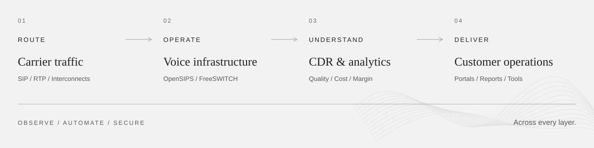
Read the system flow
- Route: carrier traffic, SIP, RTP, and interconnects.
- Operate: OpenSIPS, FreeSWITCH, Linux, and Docker.
- Understand: CDR ingestion, analytics, quality, and margin.
- Deliver: customer portals, reports, and operational tools.
Observability, automation, and security connect the entire system.
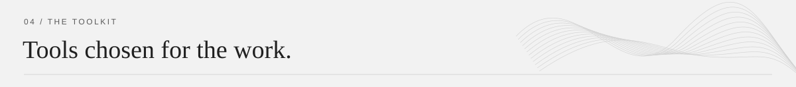
| Area |
Tools & technologies |
| Telecom |
OpenSIPS · FreeSWITCH · VOS3000 · SIP · RTP · LCR · CDR |
| Infrastructure |
Linux · Docker · Coolify · Caddy · Cloudflare · SSH · Git |
| Backend & data |
Python · FastAPI · Flask · PostgreSQL · ClickHouse · DuckDB · MySQL · Kafka |
| Interfaces |
TypeScript · Next.js · React · JavaScript · HTML · CSS |
| Observability |
Grafana · fleet probes · service health monitoring · ClickHouse analytics |
| Security |
Nmap · Burp Suite · Ghidra · gdb · ltrace · web, API & VoIP testing |
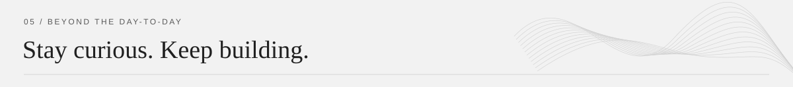
Security projects are for authorized engagements, defensive research, bug-bounty scopes, and controlled labs.
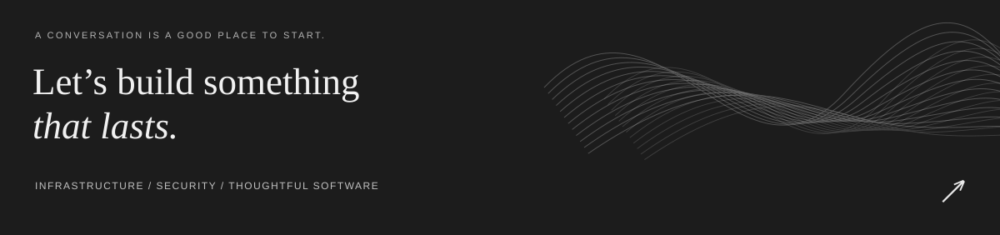
Start a conversation ↗
/
LinkedIn
/
Portfolio
ADITYA AJAY SINGH / BUILD WITH INTENTION.